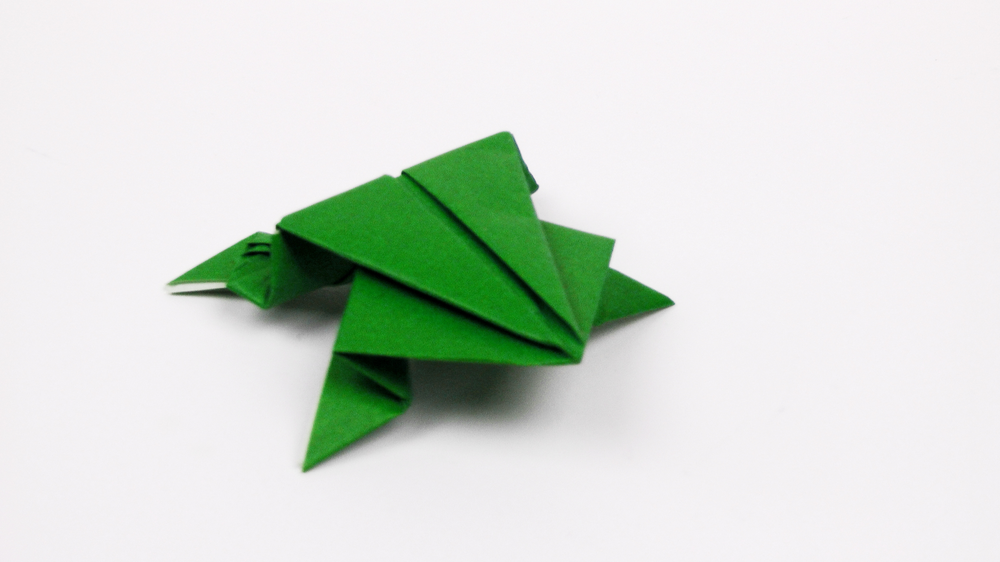
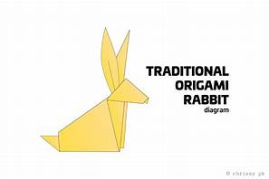
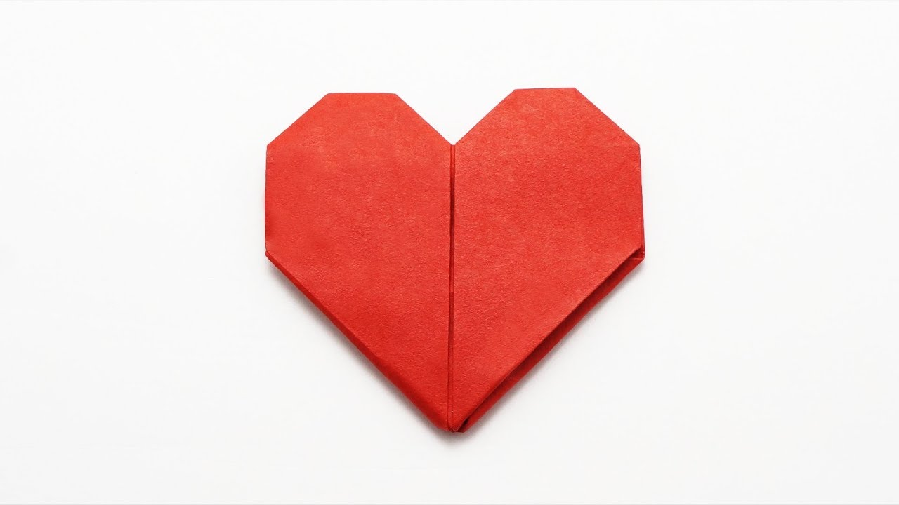

Origami Designs
About Us
Follow Us
Here you can learn an oragami frog.

Interesting facts about frogs.
- There are over 5,000 species of frog.
- Frogs don’t need to drink water as they absorb it through their skin.
- Frogs don’t prefer eating a dead insect or fly.
Here you can learn an oragami ninja star.

Interesting facts about ninjas.
- Ninjas Came From China. Most people assume ninjas came from Japan.
- Female ninjas were some of the most deadly to have ever lived.
Here you can learn an oragami rabbit.

Interesting facts about rabbits.
- A male rabbit is called a buck. A female rabbit is called a doe. A young rabbit is called a kit (or kitten).
- The World’s Largest Rabbit named “Darius” weighs approximately 50 pounds and is currently 4 feet, 3 inches.
- Rabbits and bunnies are the same animal.
Here you can learn an oragami heart.

Interesting facts about the heart.
- The heart is one of the most important organs in the human body
- The study of the human heart and its various disorders is known as cardiology.
- The average heart is the size of a fist in an adult.
Thanks for visiting. I hope you enjoyed making these origamis. Bye. :)